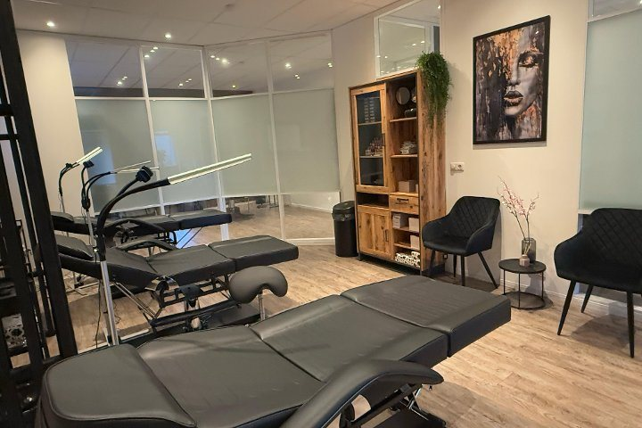

Sempre Belleza
Permanente
make-up.
Powderbrows, ombré brows en microblading, allemaal inclusief nabehandeling. Daarnaast eyeliners, full lips, laserontharen en huidverbetering.

Definitief Ontharen / Laser Ontharen
Laserontharen / definitief ontharen Diode Ice Laser Wil je je nooit meer zorgen maken over het ontharen van je benen, oksels, bikinilijn, etc.? Dan is laserontharen de oplossing! Laseren is een ontharingsmethode waarbij de haren definitief worden verwijderd. Tijdens een laserbehandeling wordt er een zeer krachtige lichtstraal uitgezonden waardoor de haarzakjes vernietigd worden. De haarzakjes zijn vernietigd na 6 tot 10 laserbehandelingen. Het resultaat is een definitieve zijdezachte huid! 10 minOp aanvraag Combideal carbon laser & lashlift Je huid wordt deskundig geanalyseerd, zodat bepaald kan worden wat jouw huidtype is en deze precies nodig heeft. 1 uur 20 min€99,95Permanent Make-up (PMU)
Powderbrows (incl. nabehandeling) Wil jij een mooi en sprekend gezicht zonder uren voor de spiegel door te brengen? In dat geval kun je permanente make-up (pmu) overwegen. Deze vorm van make-up is perfect wanneer je minder tijd aan je beautyroutine wilt besteden of wanneer je bijvoorbeeld allergisch bent voor normale make-up. Net als bij een tatoeage worden er micropigmenten in de huid aangebracht die lange tijd blijven zitten. Permanente make-up is geschikt voor je oogleden, lippen en wenkbrauwen en kan zelfs gebruikt worden voor het aanbrengen van sproetjes of beauty marks. 1 uurOp aanvraag Ombre Brows (incl. nabehandeling) 1 uur€275 Microblading (incl. nabehandeling) 1 uur€275 Eyeliners (incl. nabehandeling) Wil jij een mooi en sprekend gezicht zonder uren voor de spiegel door te brengen? In dat geval kun je permanente make-up (pmu) overwegen. Deze vorm van make-up is perfect wanneer je minder tijd aan je beautyroutine wilt besteden of wanneer je bijvoorbeeld allergisch bent voor normale make-up. Net als bij een tatoeage worden er micropigmenten in de huid aangebracht die lange tijd blijven zitten. Permanente make-up is geschikt voor je oogleden, lippen en wenkbrauwen en kan zelfs gebruikt worden voor het aanbrengen van sproetjes of beauty marks. 30 minOp aanvraag Full Lips (incl. nabehandeling) Wil jij een mooi en sprekend gezicht zonder uren voor de spiegel door te brengen? In dat geval kun je permanente make-up (pmu) overwegen. Deze vorm van make-up is perfect wanneer je minder tijd aan je beautyroutine wilt besteden of wanneer je bijvoorbeeld allergisch bent voor normale make-up. Net als bij een tatoeage worden er micropigmenten in de huid aangebracht die lange tijd blijven zitten. Permanente make-up is geschikt voor je oogleden, lippen en wenkbrauwen en kan zelfs gebruikt worden voor het aanbrengen van sproetjes of beauty marks. 1 uur 30 min€275 Tatoeages verwijderen met Picolaser If memories of a holiday romance or incorrect Chinese symbol haunt you whenever you catch a glimpse of your tattoo, it may be time to rethink your ink. In the past, tattoos may have been permanent, but thanks to innovative laser technology, tattoo removal treatments are now more effective than ever. Start wiping the proverbial slate clean, today! 15 minOp aanvraag PMU verwijderen met Picolaser If memories of a holiday romance or incorrect Chinese symbol haunt you whenever you catch a glimpse of your tattoo, it may be time to rethink your ink. In the past, tattoos may have been permanent, but thanks to innovative laser technology, tattoo removal treatments are now more effective than ever. Start wiping the proverbial slate clean, today! 15 minOp aanvraagGezichtsbehandelingen / Laser
Plex-R/ Fibroblast laser (rimpel) behandelingen Goede wijn, zonnebaden of nachten doorhalen; wie houdt er niet van? Helaas neemt onze huid ons dit niet in dank af. Met behulp van de nieuwste technologieën kunnen laserbehandelingen gelukkig helpen om de klok terug te draaien en tekenen van huidveroudering of littekens te verminderen. Zeg dus maar gedag tegen dure crèmes en maak kennis met een huidverbeterende behandeling die écht werkt. 15 minOp aanvraagPermanente Make-up Opfrissen/touch Up
PMU - Opfrissen (touch up) Wil jij een mooi en sprekend gezicht zonder uren voor de spiegel door te brengen? In dat geval kun je permanente make-up (pmu) overwegen. Deze vorm van make-up is perfect wanneer je minder tijd aan je beautyroutine wilt besteden of wanneer je bijvoorbeeld allergisch bent voor normale make-up. Net als bij een tatoeage worden er micropigmenten in de huid aangebracht die lange tijd blijven zitten. Permanente make-up is geschikt voor je oogleden, lippen en wenkbrauwen en kan zelfs gebruikt worden voor het aanbrengen van sproetjes of beauty marks. 30 minOp aanvraag MHP (Micro hair pigmentation) Wil jij een mooi en sprekend gezicht zonder uren voor de spiegel door te brengen? In dat geval kun je permanente make-up (pmu) overwegen. Deze vorm van make-up is perfect wanneer je minder tijd aan je beautyroutine wilt besteden of wanneer je bijvoorbeeld allergisch bent voor normale make-up. Net als bij een tatoeage worden er micropigmenten in de huid aangebracht die lange tijd blijven zitten. Permanente make-up is geschikt voor je oogleden, lippen en wenkbrauwen en kan zelfs gebruikt worden voor het aanbrengen van sproetjes of beauty marks. 1 uurOp aanvraagHuidverbetering
Carbon laser-peeling Goede wijn, zonnebaden of nachten doorhalen; wie houdt er niet van? Helaas neemt onze huid ons dit niet in dank af. Met behulp van de nieuwste technologieën kunnen laserbehandelingen gelukkig helpen om de klok terug te draaien en tekenen van huidveroudering of littekens te verminderen. Zeg dus maar gedag tegen dure crèmes en maak kennis met een huidverbeterende behandeling die écht werkt. 45 minOp aanvraag Microneedling Bij microneedling wordt er gebruik gemaakt van zeer fijne naaldjes die op hoog tempo vibreren in de huid. Zo maken de naaldjes kleine verticale geultjes in de huid waardoor de aanmaak van collageen en elastine wordt gestimuleerd. Dit levert een egalere en stevigere huid op. Ook worden acnelittekens en fijne lijntjes minder zichtbaar.<br> <br> Bij microneedling met een dermaroller wordt er gebruik gemaakt van een roller uitgerust met hele fijne naaldjes. Hiermee wordt de huid als het ware ‘beschadigd’. Dit stimuleert de huidvernieuwing, waardoor deze soepeler, egaler en stralender wordt. Het voordeel van een dermapen ten opzichte van een Dermaroller is dat je minder hersteltijd nodig hebt en dat de behandeling prettiger is om te ondergaan. 1 uur€75 Glycolzuurpeeling Bij een glycolzuurpeeling wordt de bovenste huidlaag met dode huidcellen verwijderd, waardoor oppervlakkige rimpeltjes en acnelittekens vervagen, pigmentvlekken verminderen en de huid zichtbaar gladder wordt. Deze behandeling bestaat uit: * Reiniging * Peeling * Masker 30 min€50 CO2 laser Met laserbehandelingen kunnen diverse huidproblemen effectief worden behandelend. Een laserbehandeling stimuleert de huid die volume en elasticiteit mist. De laser vernieuwt de opperhuid en het bindweefsel omdat de aanmaak van collageen (bindweefsel in de huid) toeneemt, dit zorgt voor een mooie jonge en fris uitziende huid. Een laserbehandeling is gericht op huidverbetering en kan worden ingezet bij rimpels, couperose, pigmentvlekken, zonbeschadiging, een onrustige, slecht uitziende, vale en grauwe huid. 1 uurOp aanvraagBij een deel van de behandelingen staat in hun eigen agenda geen bedrag; daar wordt eerst overlegd wat er nodig is. Vraag het gerust bij je aanvraag.
Eerst even overleggen?
Dat is bij dit werk verstandig. Zet je vraag in de aanvraag, dan bellen ze terug.